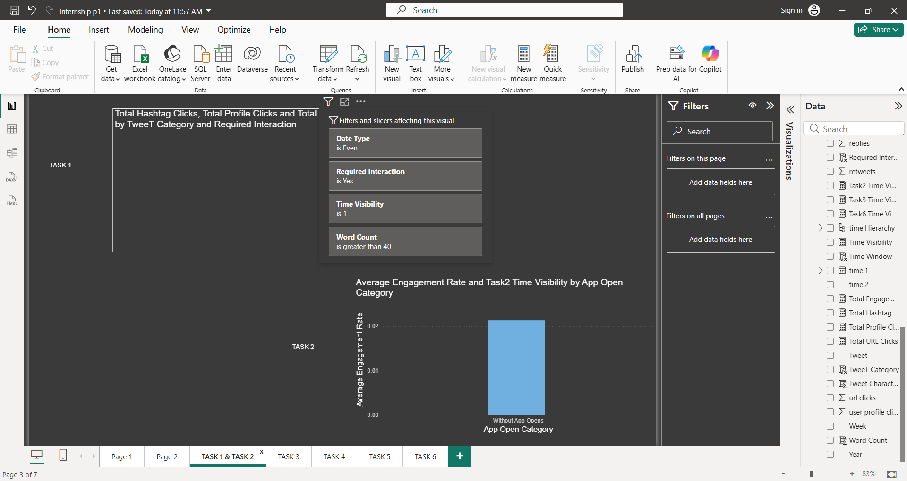
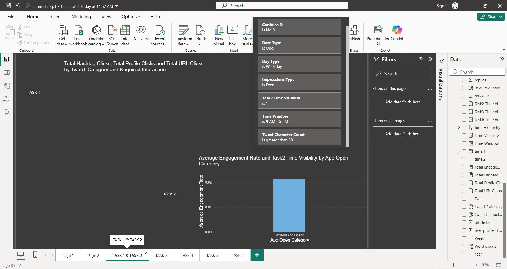
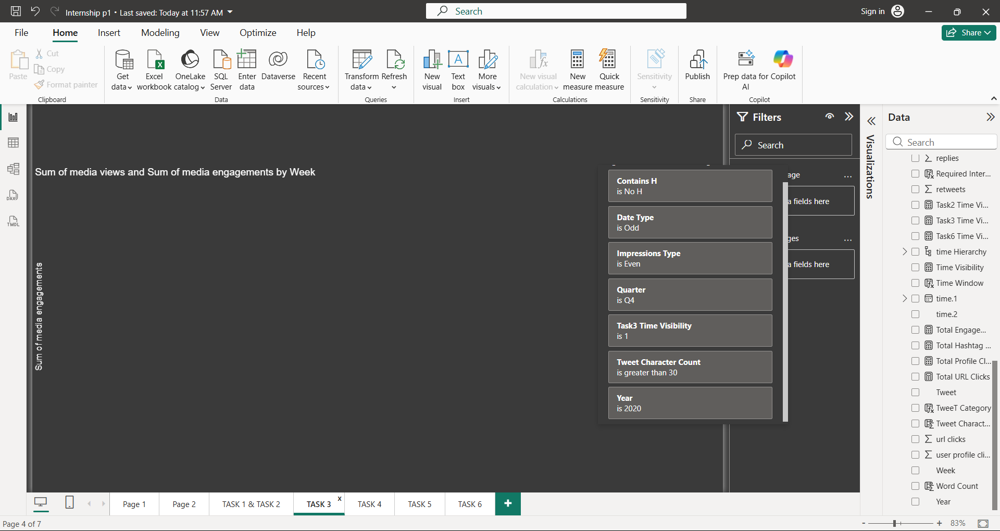
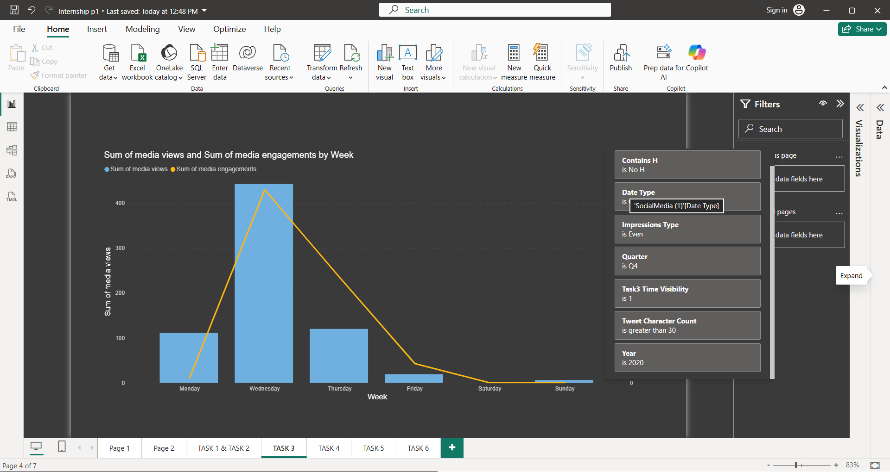
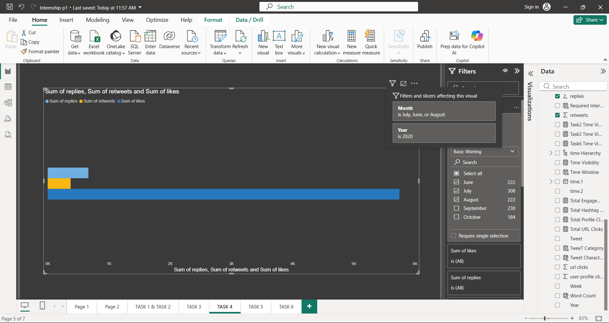
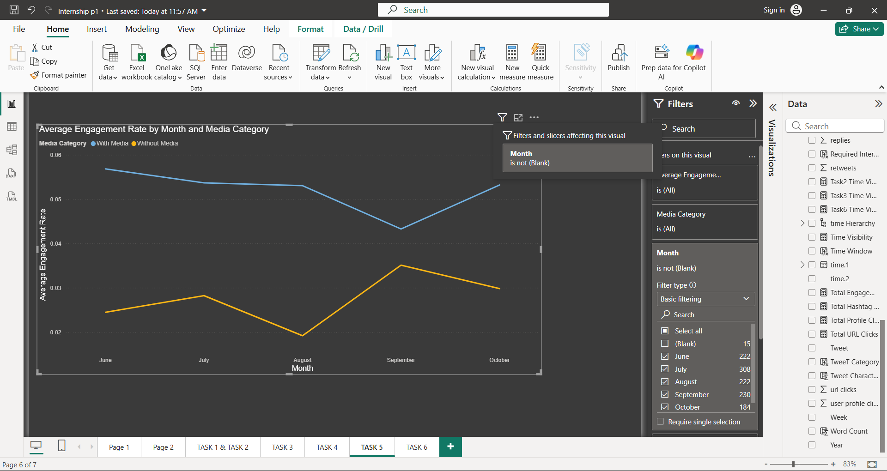
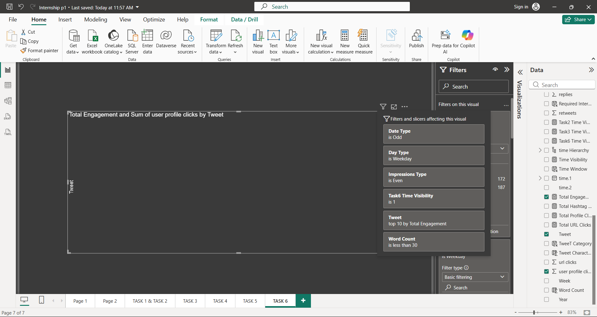
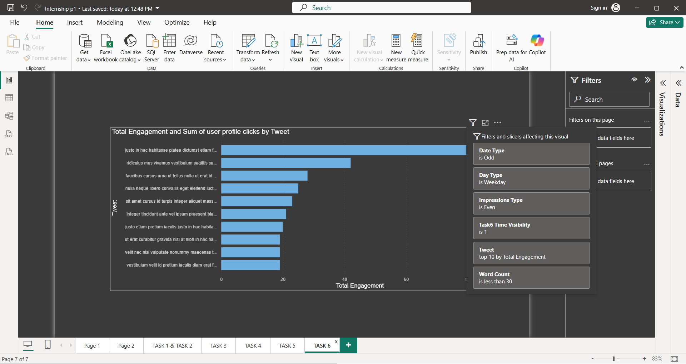

Task 1 — Tweet Interaction Breakdown by Category
Clustered bar chart showing URL clicks, user profile clicks, and hashtag clicks grouped by tweet category. The required interaction, date, word-count, and time-visibility conditions were applied.

Task 2 — Engagement Rate Comparison
Comparison of engagement rates between tweets with app opens and tweets without app opens. The specified weekday, time-window, impressions, date, character-count, and text filters were applied.

Task 3 — Media Interaction by Day of Week
Dual-axis visualization showing media views and media engagements by day of the week. The required filters and time-visibility condition were applied.


Task 4 — Replies, Retweets and Likes Comparison
Bar chart comparing the sum of replies, retweets, and likes for tweets posted during June, July, and August 2020.

Task 5 — Monthly Engagement Rate Trend
Line chart showing the monthly average engagement rate, separated into tweets with media and tweets without media.

Task 6 — Top 10 Tweets by Engagement
Top 10 tweets ranked by total engagement, calculated from retweets and likes. Weekend tweets were excluded and the required impressions, date, word-count, and time-visibility conditions were applied.

